Schlouk
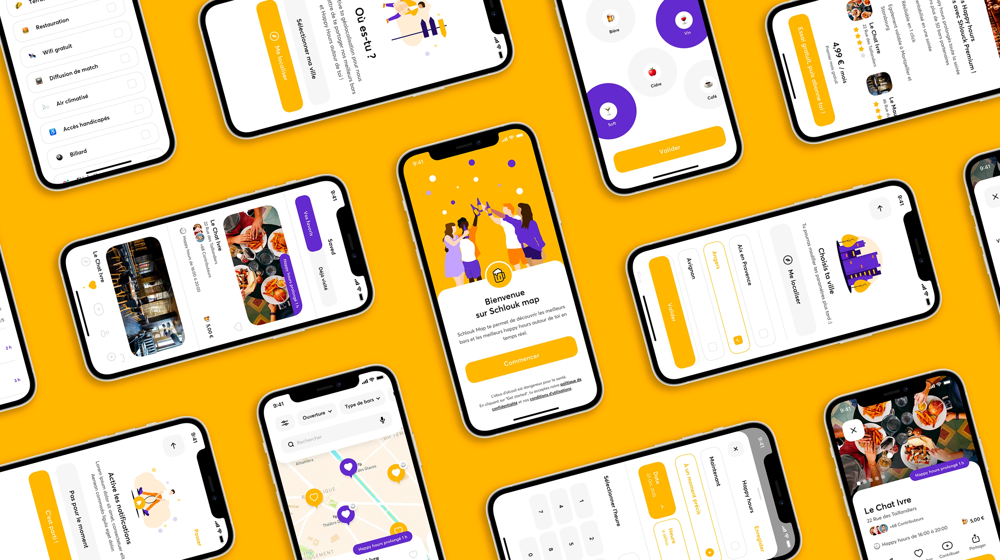
November 2020
Are you looking for a nice bar ? With Schlouk Map, you can find the best bars in your city with or without happy hours to have a good time with your friends, invite your date or discover an original bar. Join the Schloukers community and enjoy the happy hours around you !
Schlouk Map is a free mobile app that allow you to discover the best bars around you according to your needs and your budget.
With geolocation at your fingertips, you can easily spot nearby bars and find great places near you.
Every penny counts ! Have drinks at the best price thanks to Happy Hours and built-in search engine.
Happy hour all night long & special prices for Schlouk Club members in many partner bars.
-
Co-founder
Melisande Fleisch
-
Co-founder
Jules Lagadic
-
Product Manager
Daniel Huertas
-
UX Designer
Yann Alessandri
-
Agency
Mozza
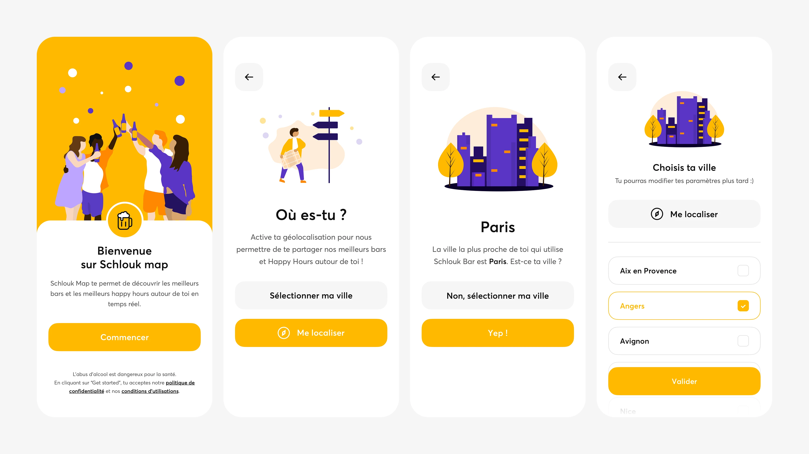
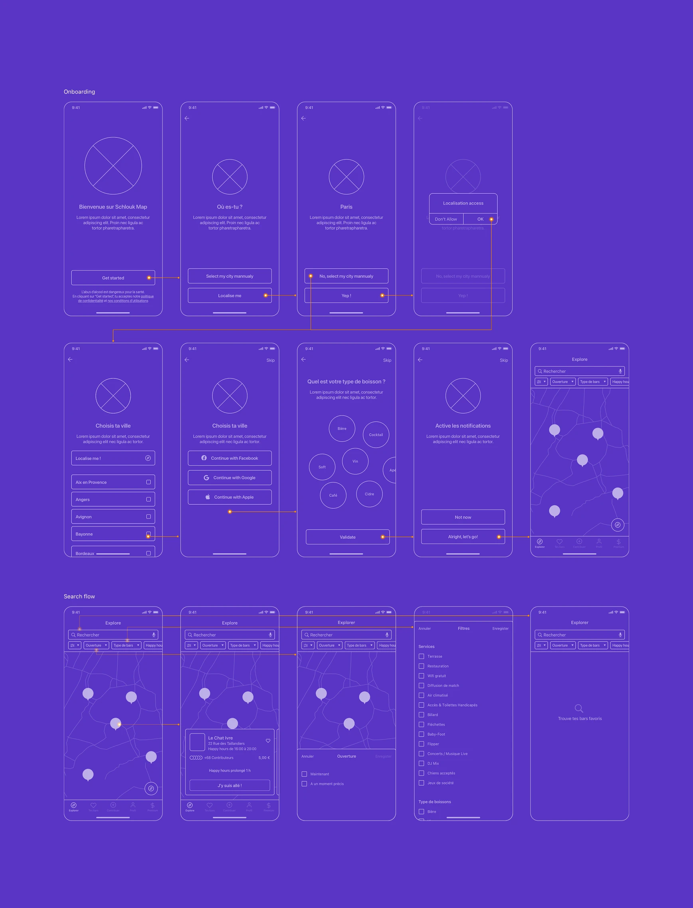
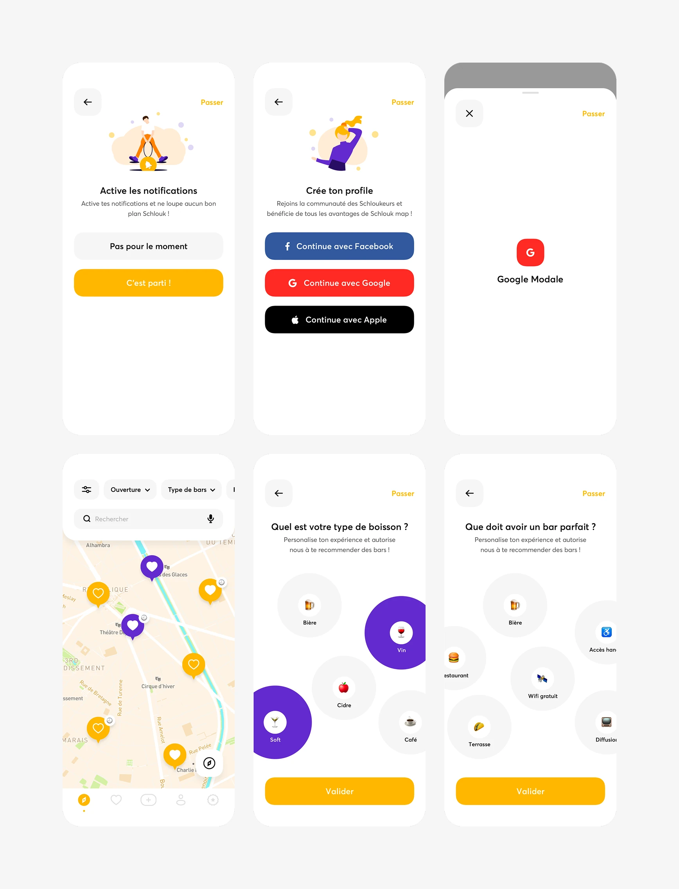
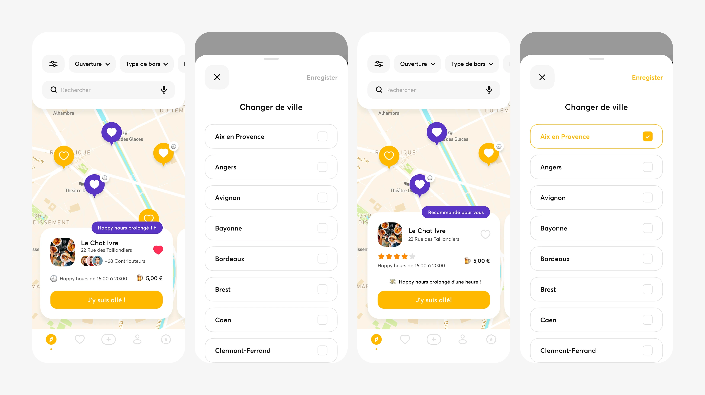
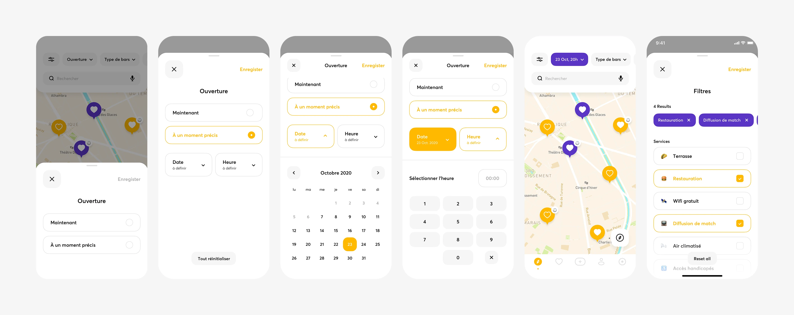
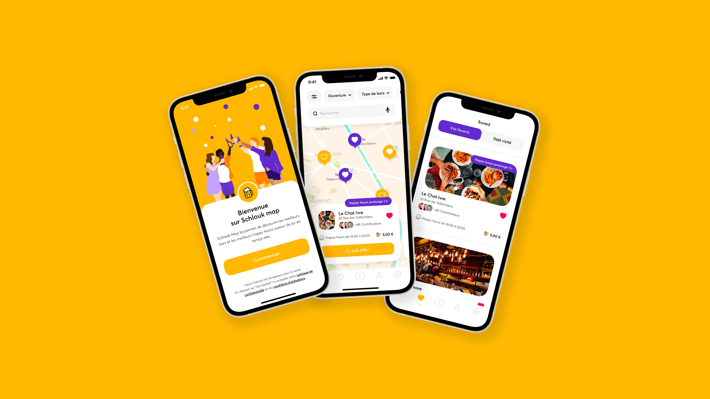
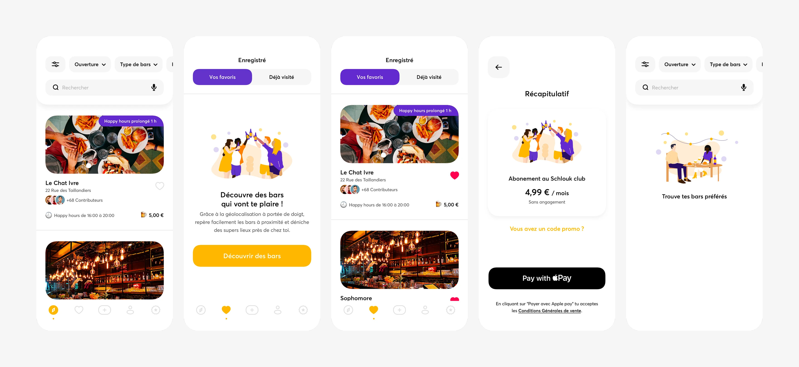
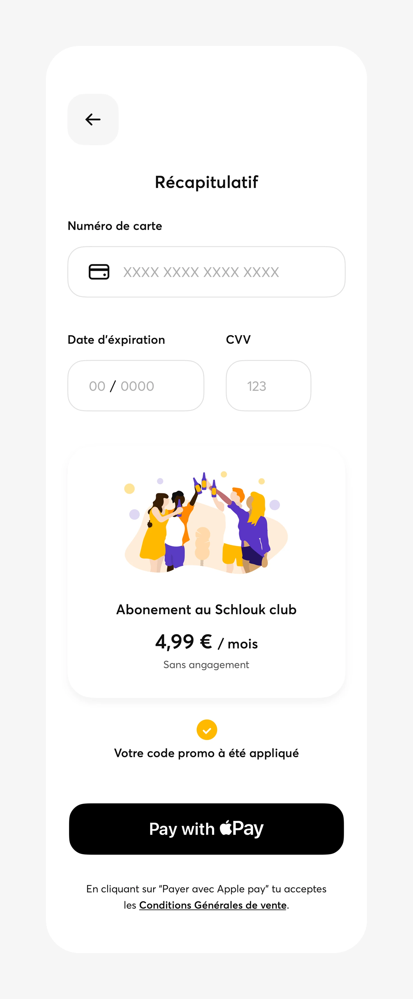
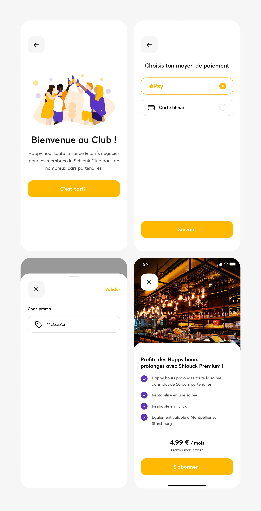
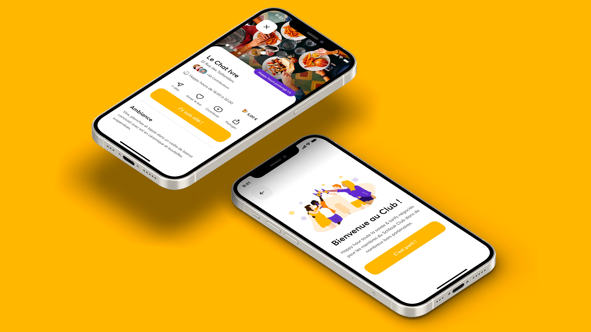
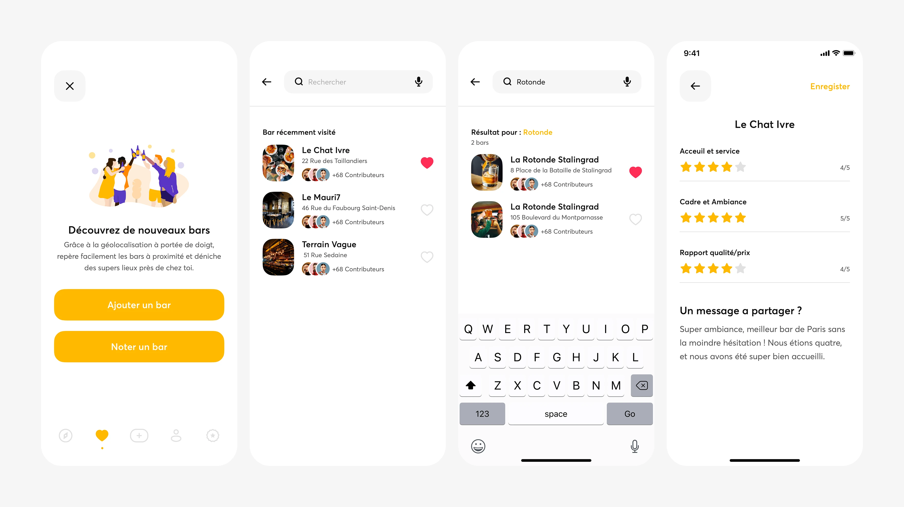
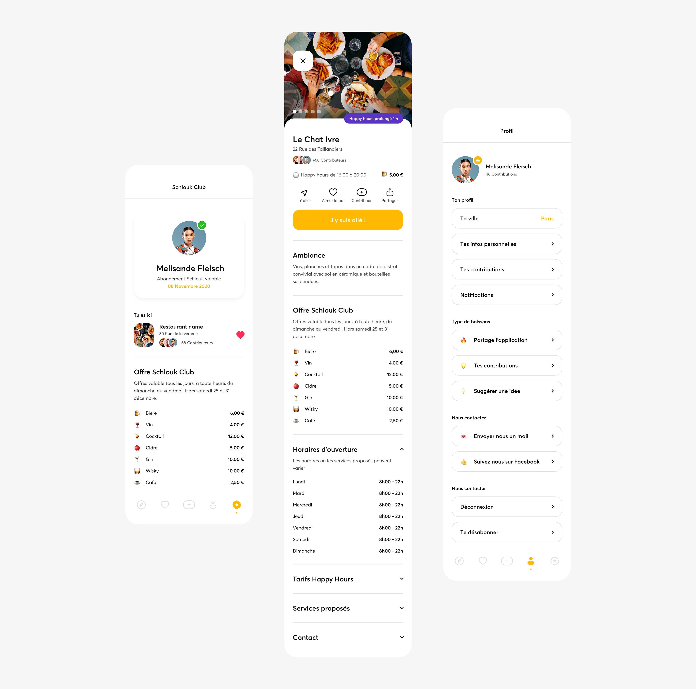
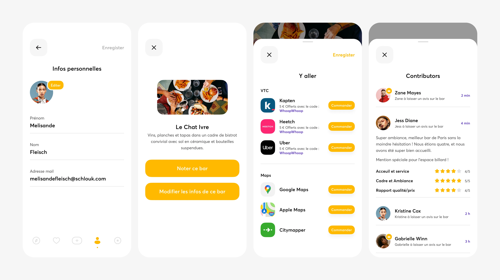